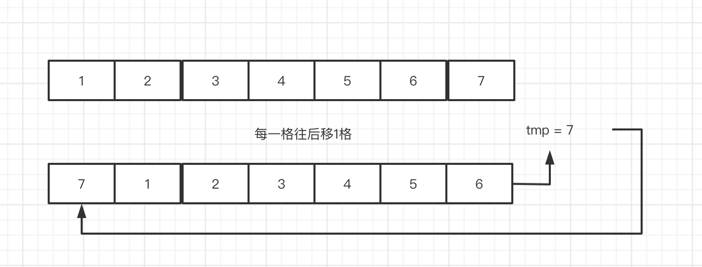
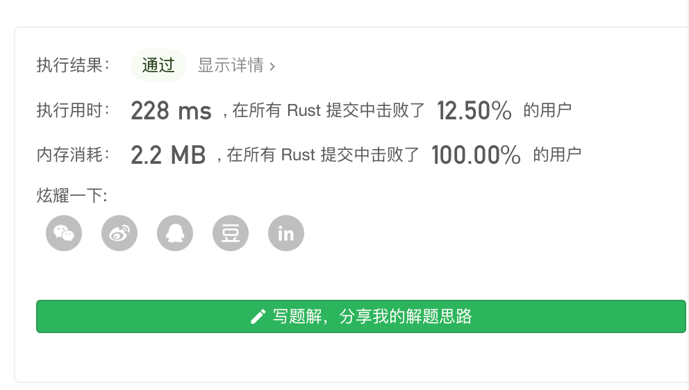
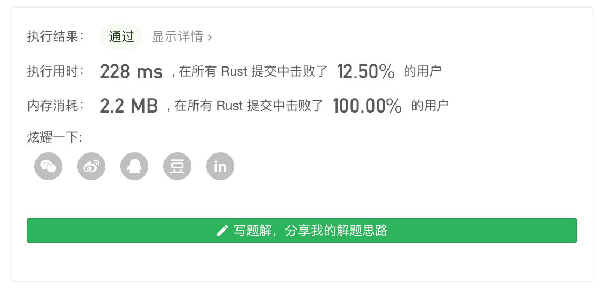
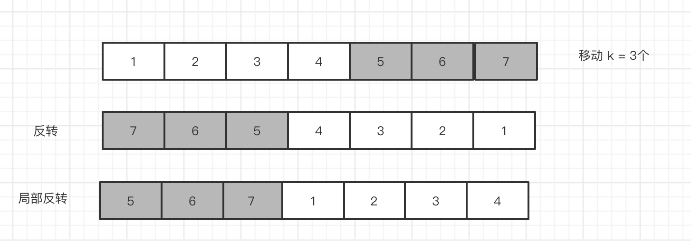
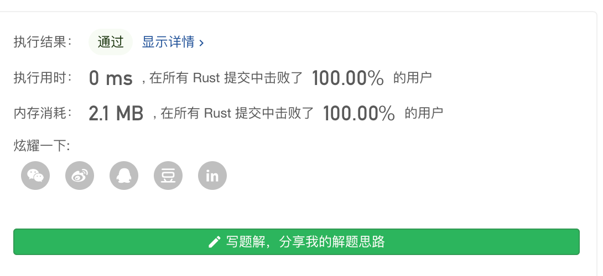

Leetcode 第189题 旋转数组
给定一个数组，将数组中的元素向右移动 k 个位置，其中 k 是非负数。
示例 1:
输入: [1,2,3,4,5,6,7] 和 k = 3 输出: [5,6,7,1,2,3,4] 解释: 向右旋转 1 步: [7,1,2,3,4,5,6] 向右旋转 2 步: [6,7,1,2,3,4,5] 向右旋转 3 步: [5,6,7,1,2,3,4]
示例 2:
输入: [-1,-100,3,99] 和 k = 2 输出: [3,99,-1,-100] 解释: 向右旋转 1 步: [99,-1,-100,3] 向右旋转 2 步: [3,99,-1,-100]
说明:
- 尽可能想出更多的解决方案，至少有三种不同的方法可以解决这个问题。
- 要求使用空间复杂度为 O(1) 的 原地 算法。
解题思路
这道题目,虽然是简单 但是要求我们 精良使用三种方法 取解决问题.
首先 第一种 很容易想到,就是 就是把最后一个放到数组第一个位置,再把当前数组 后往后移动。
第二种方法
暴力法
这种做法,每次往右旋转一次就要全部一动一遍,所以
算法复杂度 是 O(kn)
空间复杂度 是 O(1)
pub fn rotate(nums: &mut Vec<i32>, k: i32) { let size = nums.len(); for i in 0..k as usize{ let tmp = nums[nums.len()-1]; for j in 0..nums.len()-1 as usize{ nums[size- j -1 ] = nums[size - j -2]; } nums[0] = tmp; } }
优化
上面 的 k 是多少 就移动 kn 次 ,如果 k = n 那么相当于循环了一次,又回到原点,我们在小学时 学过周期函数的 概念,相当于 k = n 时 为 1个周期 ,所以我们 可以理解n为周期函数的周期t, 所以 我们可以使用 k % n ,这样我们就可以 把算法的时间复杂度 压缩到 一个周期内。
let mut k = k % size as i32;
可以看到实际上,并没有 什么性能上的提升,可能是 官方测试 的k 都 小于等于 n,所以没什么提升。
反转数组
我们 可以看到 通过 2次反转,我们就可以求出 向右移动数组,我们 将数组 分为 2部分 ,
我们需要另外实现 一个反转 数组,实际上 就是 把 索引 0 = last 1 = last -1 。
#![allow(unused_variables)] fn main() { pub fn reserve(nums: &mut Vec<i32>, start:usize,end:usize) { let mut tmp = 0; for i in 0..(end - start + 1)/2 { tmp = nums[end -i]; nums[end -i] = nums[start + i]; nums[start + i] = tmp; } } }
然后 实现 2 次旋转,第一次 为全部翻转,
第二次旋转 分2部分, 一部分 为 [0,k -1],第二部分分为 [k-1,]
pub fn rotate(nums: &mut Vec<i32>, k: i32) { //取余 let k = k % nums.len() as i32; //0 就相当于 循环一圈 就不用了调整了 if k ==0{ return; } //第一次旋转 reserve(nums,0,nums.len()-1); //第二次旋转 reserve(nums,0,(k-1) as usize); reserve(nums,k as usize,nums.len()-1); } pub fn reserve(nums: &mut Vec<i32>, start:usize,end:usize) { let mut tmp = 0; for i in 0..(end - start + 1 )/2 { tmp = nums[end -i]; nums[end -i] = nums[start + i]; nums[start + i] = tmp; } } fn main() { let mut tt = vec![1,2,3,4,5,6,7]; rotate(tt.as_mut(), 5); println!("{:?}",tt); }
时间复杂度：O(n)
空间复杂度：O(1)
